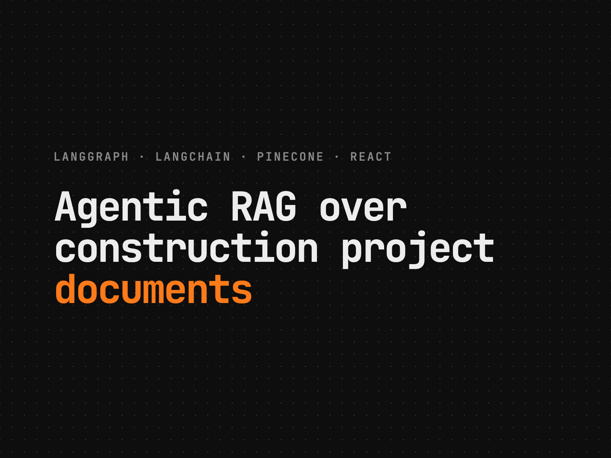

Case study · AI product
Snapz AI: Agentic RAG for Construction Documents
A portal where US construction companies chat with their project documents. Documents go through OCR into a vector database, and an agentic RAG finds what it needs and answers in one reply.

- Client
- RMG Associates
- Year
- 2024
- Type
- AI product
Context
A construction project produces a huge amount of documents, and the answer to a simple question is often spread across several of them.
RMG Associates wanted a portal where construction companies in the United States could ask their project documentation a question and get one answer back.
What I built
A portal with a chat over the documents of each project. Behind the chat:
- Every document goes through OCR and is loaded into a vector database in Pinecone.
- An agentic RAG, built with LangChain and LangGraph, decides which documents it needs, pulls the information out of each one and combines it into a single answer.
- It also extracts the key data of each document and prepares reports and notifications on its own.
How I worked
We started the OCR with Tesseract. As AI models improved, we moved to Mistral OCR: it read the documents better and was worth the cost.
The RAG is agentic for a reason. A plain search returns the passages that look most like the question. Here the agent first works out what it needs, searches for it, and only then writes the answer.
Stack
- Mistral OCR, Tesseract
- OCR. Tesseract first, Mistral OCR later.
- Pinecone
- The vector database with the documents.
- LangChain, LangGraph
- The agentic RAG.
- Python, FastAPI, Pydantic
- The backend.
- PostgreSQL
- The database.
- React, Vite, TypeScript
- The portal.
I interviewed several before deciding, and my instinct didn't fail me. Pablo has been a trusted advisor and someone to think out loud with. At this point I consider him part of my team.